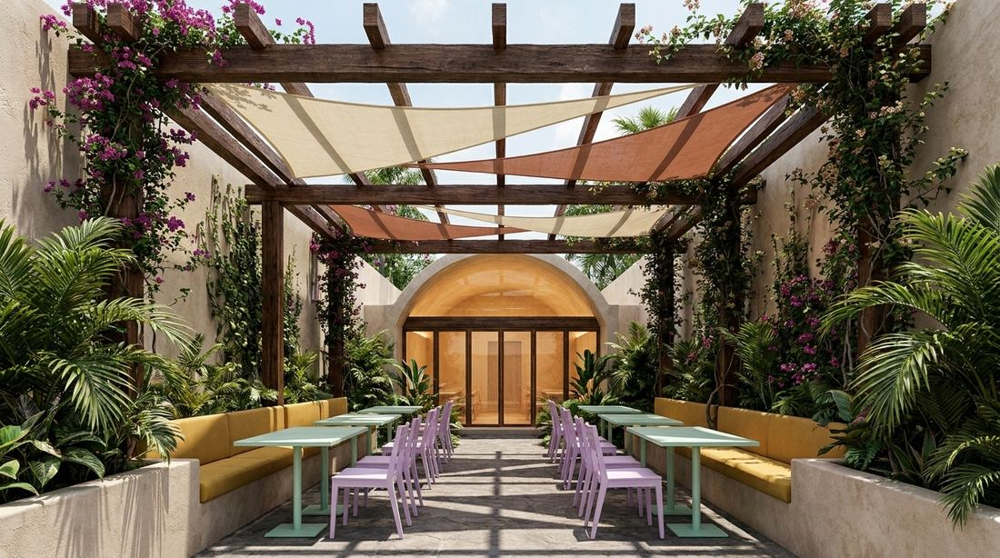
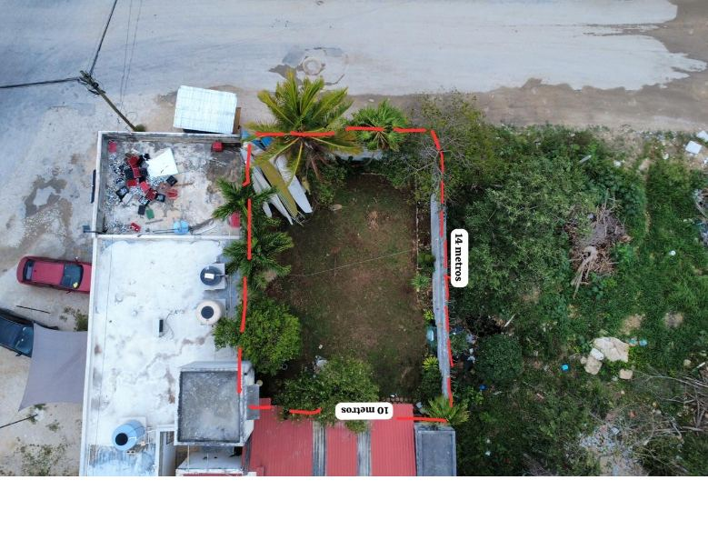
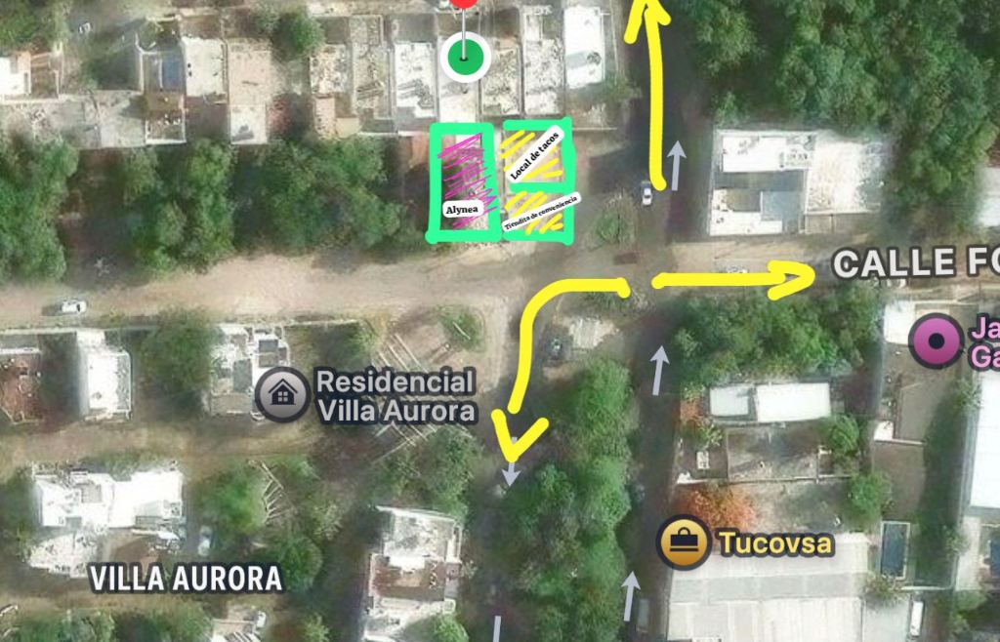
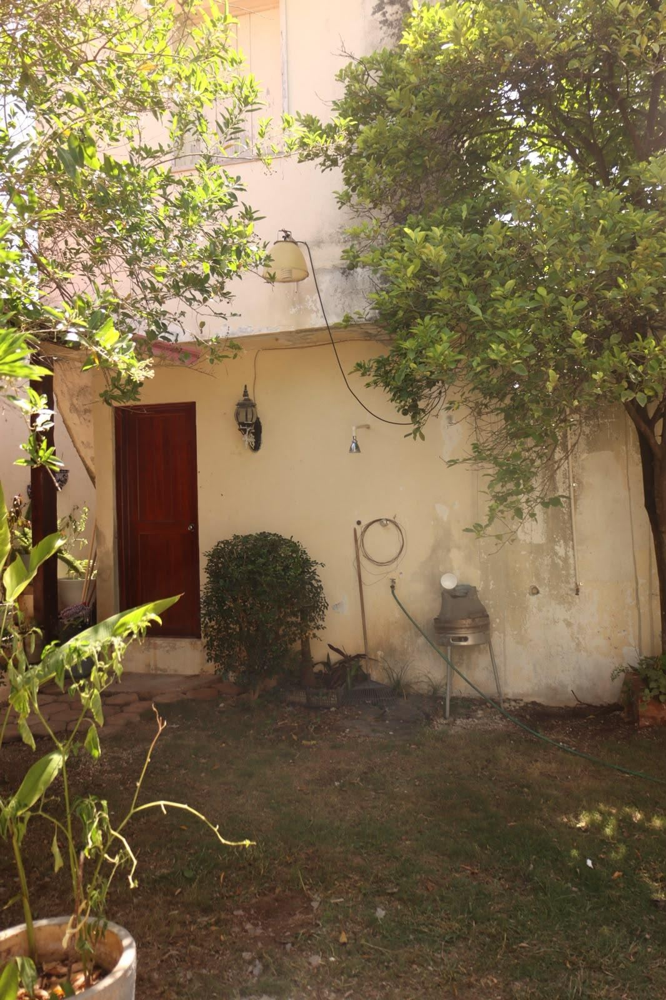
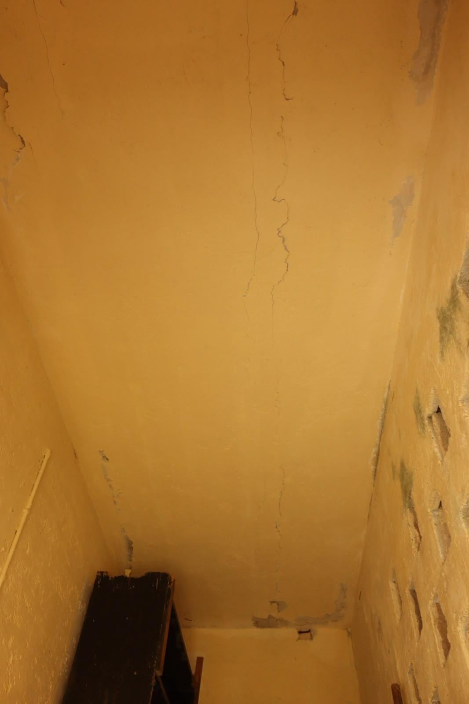
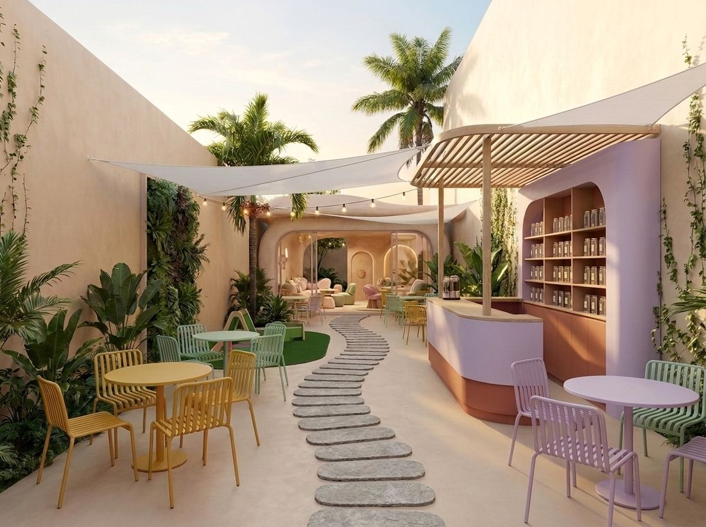
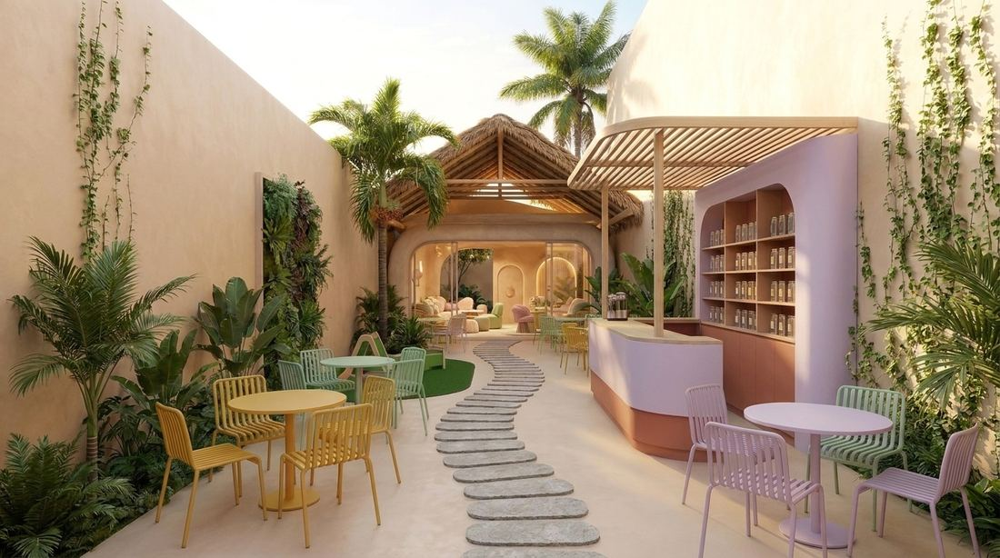
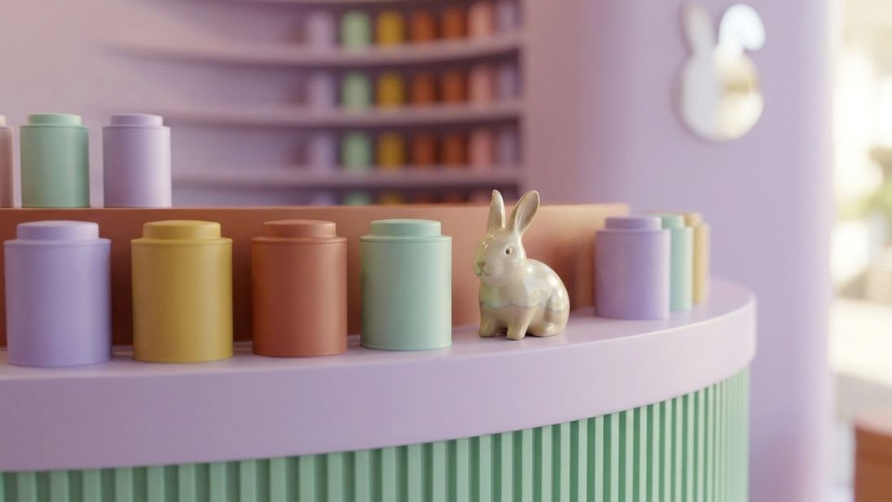
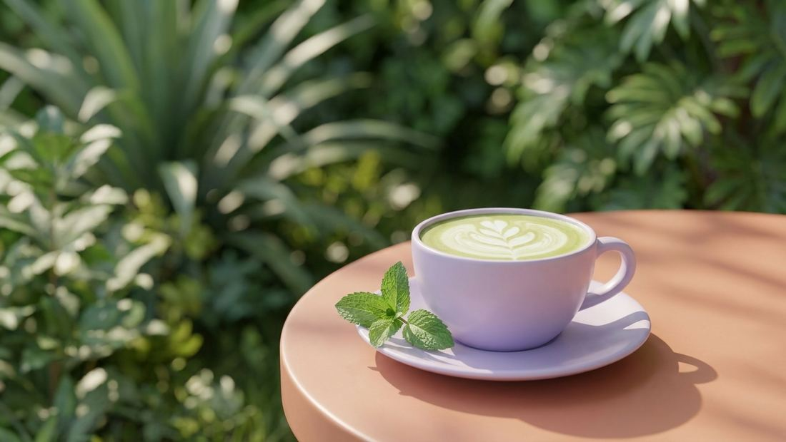
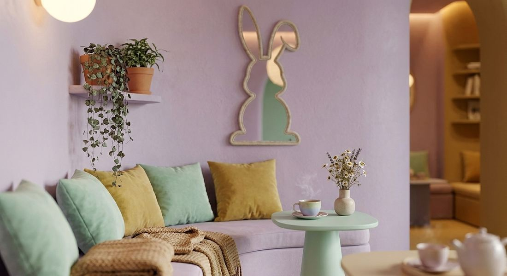

Anteproyecto conceptual · Espacio comercial
Alynea — Jardín de Té
En breve
Alynea busca un segundo local con alma propia. La Propuesta B abraza todo el terreno: el jardín de té del frente y un pabellón climatizado al fondo, donde hoy está la construcción antigua — un solo espacio, de punta a punta, que funciona pase lo que pase el clima.
Como despacho y constructora, en Galarza diseñamos, construimos y mantenemos: una sola responsable del concepto a la entrega. Lo que sigue es la dirección de diseño — los detalles técnicos y la inversión se afinan por etapas.
01 — El sitio
La Propuesta B abraza todo el predio: el jardín del frente más la franja del fondo, donde hoy se levanta una construcción antigua que ya cumplió su ciclo.


02 — Estado actual
Antes de proponer, documentamos foto por foto la estructura existente ("la casa"). Encontramos un patrón claro de deterioro: grietas recurrentes en cerramientos y remates, humedad y moho, acero de refuerzo expuesto en el muro perimetral.
No es solo cosmético. Por eso la Propuesta B no rehabilita: demuele y rediseña de cero, para no heredar los problemas de una construcción que ya cumplió su vida útil.


03 — Opciones de diseño
El jardín de té del frente se mantiene — mismo lenguaje curvo y pastel — y al fondo, donde estaba la construcción antigua, nace un pabellón cerrado y climatizado. Toca cada opción para elegir su carácter.


Imágenes de ambientación · no representan el diseño ejecutivo final. Sirven para elegir dirección de diseño.
04 — Zonificación
Diagrama conceptual de zonas — sin cotas de proyecto ejecutivo. La construcción del fondo se demuele y se reemplaza por el pabellón cerrado; el jardín se despliega hacia el frente.
Programa de servicio
Las áreas de servicio —baños, cocina de preparación y bodega— se integran al conjunto. Su superficie exacta y el aforo se definen en el proyecto ejecutivo.
Mundo Alynea
Imágenes de ambientación del universo Alynea — el tono, los materiales y los guiños (hola, Stella) que harán único el espacio.



El pabellón techado resuelve lo que el jardín no puede: un espacio fresco y protegido para la lluvia, el sol fuerte o un momento más íntimo — sin salir nunca del mundo de Alynea.
A o B
Las dos comparten el mismo jardín y el mismo lenguaje de marca. Lo que cambia es el alcance.
Propuesta A · El Jardín
Elígela si quieres abrir pronto, con el jardín como protagonista, la menor obra posible y dejando "la casa" del fondo para una fase futura.
148.92 m² · intervención enfocada
Propuesta B · Jardín + Pabellón
Elígela si quieres una solución completa de punta a punta: resolver la construcción dañada del fondo y ganar un espacio climatizado que funciona todo el año.
190.74 m² · rediseño integral
Nuestra recomendación honesta: si la prioridad es abrir rápido, la A es un gran primer paso. Si Alynea quiere operar sin depender del clima y exprimir todo el terreno, la B es la más redonda.
06 — Esta etapa
Es un anteproyecto. Aún no incluye costos de construcción — se definen hasta tener un diseño aprobado y medido. La revisión estructural formal de la construcción existente se realiza en la etapa de proyecto ejecutivo.
Siguiente paso
Alynea define Propuesta A, B o una combinación.
Planos constructivos, estructurales e instalaciones + dictamen estructural.
Catálogo de conceptos y cantidades reales, medido y verificado.
Siguiente paso
Dinos qué opción te gusta más y agendamos una llamada para arrancar el proyecto ejecutivo. Sin compromiso.